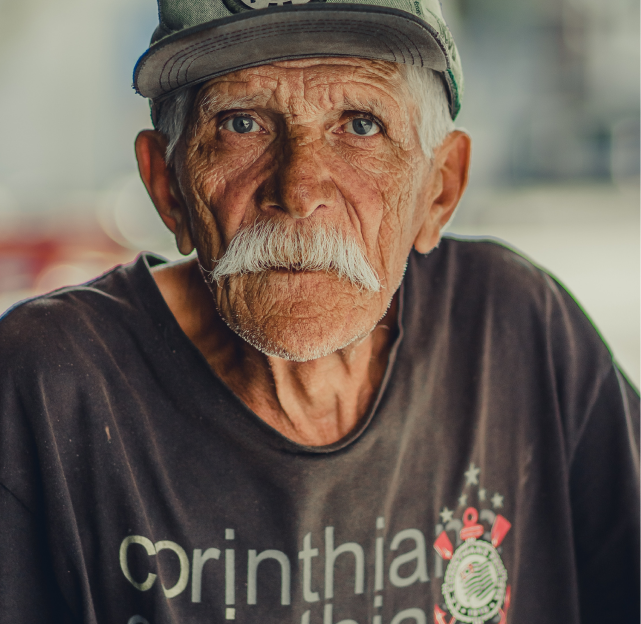
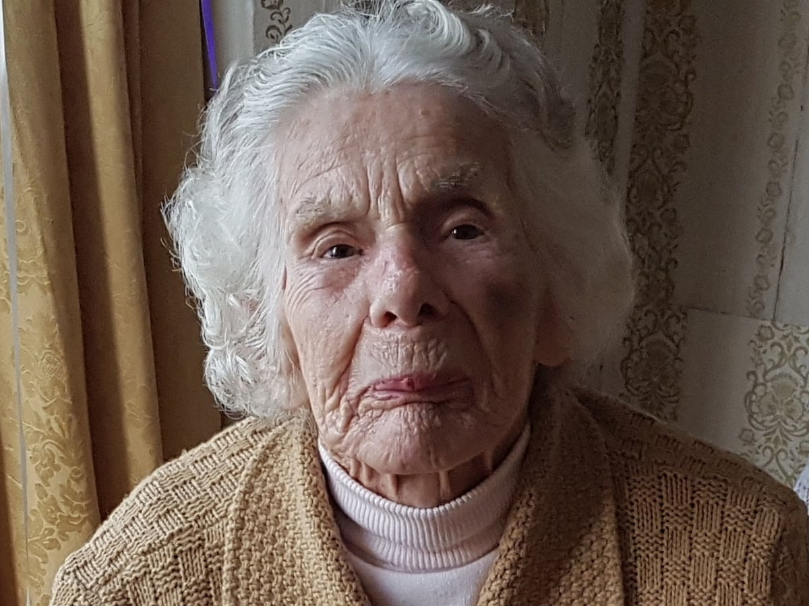
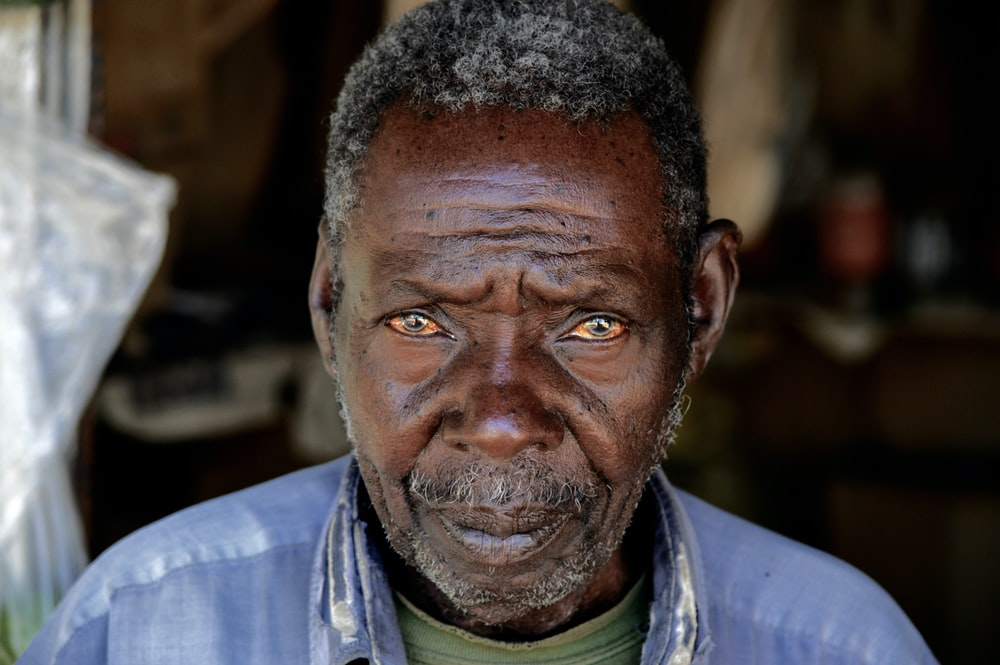

|

|
João Carlos
|
Eu sou o João, tenho 75 anos, tenho dois netos, um garoto de
10 anos e uma menina de 5. Os dois são o maior brilho da minha
vida. Eu passo mais tempo com eles do que com
|
|

|
Maria Antonieta |
Pode me chamar de Antonia, tenho 81 anos, podemos dizer que
sou a mais experiente aqui da Total Care. Estou aqui há 20
anos, não tive filhos e sou a caçula da família.
|
|

|
Fábio Victor |
Eu sou o Fábio, tenho 68 anos, você pode perceber que eu não
tenho sobrenome, como a maioria das pessoas. Isso é porque meu
bisavô quando chegou no Brasil, também não tinha, então ele
decidiu nossa famílai se chamaria "Victor". Ele também não era
muito criativo.
|